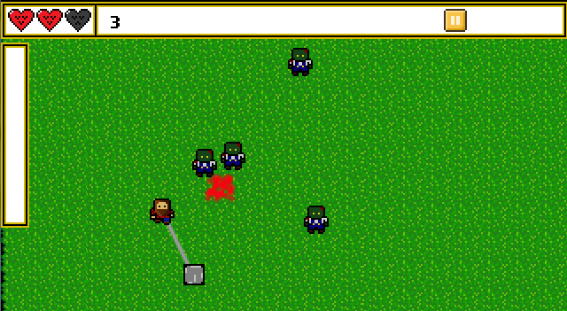

Zombie Toddler Brawl
Actionscript, Flixel

The Zombie Apocalypse has occured, and nowhere is safe. Fend off legions of small child zombies, armed only with your trusty flail.
My first attempt at a flash game, I was aiming for an arcade based infinite survival game. The unique mechanic of the game was the combat system, a flail was kept at a fixed distance from the player. As it collides and recoils upon hitting zombies, the optimal way to play is to keep switching rotation directions, leading to a very fluid and responsive control system.
I never got around to finishing the product, but it served as good practice for me. I learned some of the do's and don'ts of architecting a system, and how games / simulations function.
The game as it currently stands in its unfinished state can be found here. There still remains a chance I'll go back to it someday.